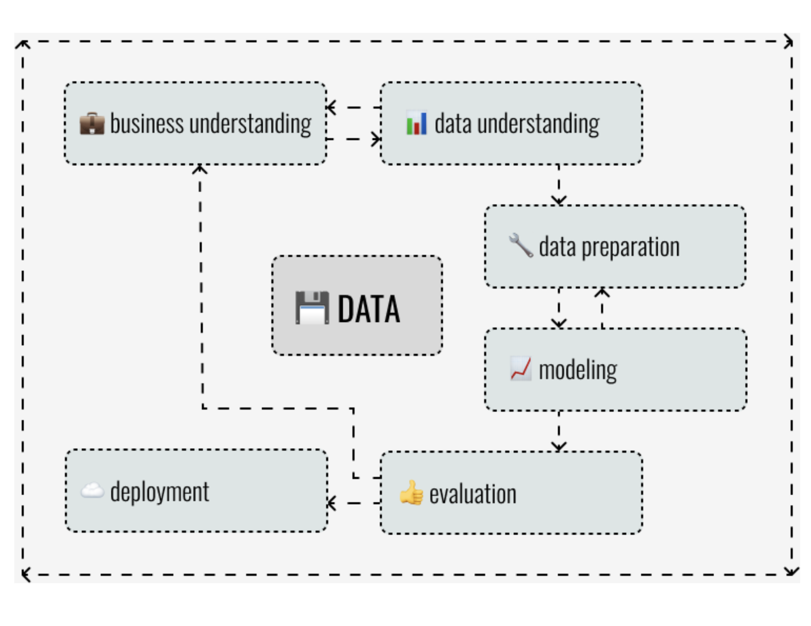
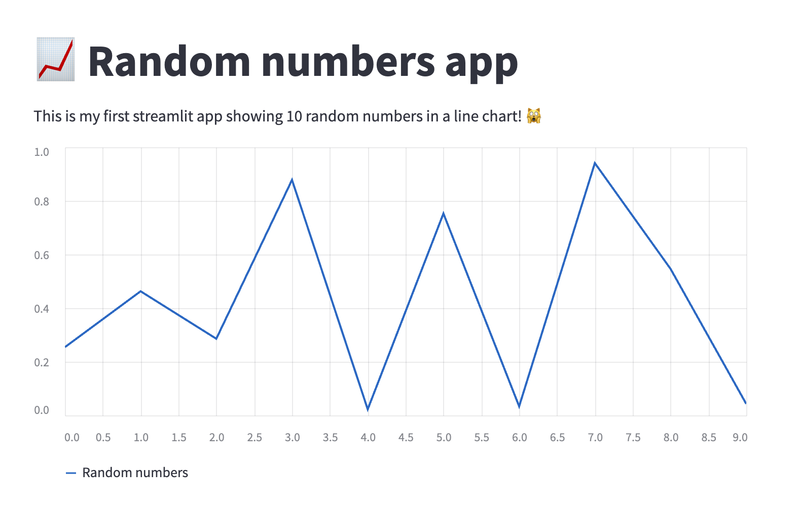

Embedding Model Into App
Contents
Embedding Model Into App#
Context#
Before we deep dive into the deployment, let’s put it into context.
Deployment of an AI solution is a crucial part of every ML project. According to CRISP-DM (CRoss Industry Standard Process for Data Mining), every ML project starts with a meeting with business people and trying to understand the problem. When we - ML Engineers - know what our main goal is, we collect the data. After that we look into them, clean them, process them, and we are trying to find valueable insights. When we are done with this phase, which some of us call “EDA” (explanatory data analysis), we try to build and test our ML models. And when something doesn’t go according to the plan, often because we aren’t the domain experts, we go back to our business people, and try to understand the problem better, so we can make our models better. And when we spend some time on testing, and convincing ourselves, that the model we have just came up with is the masterpiece that can change the world, we are supposed to really deploy the model… and, in some cases, really change the world.

In other words, without deployment, we wouldn’t be able to provide the model to our clients, we wouldn’t be able to help business automate, save time, save money, or whatever other reason there is! Simply, we wouldn’t be able to add the value that is expected from us in the first place. And that is the reason why the deployment is so crucial.
So… how can I deploy?#
OK. Now, we know that the ML model deployment process is important, and we know why. But, how can we do that? How can we provide the model to our users? As one clever man once said during the third lecture of STRV DS Academy 2022: “It depends.”
Web application#
Let’s imagine the following situation. Our client wants us to create a model that would be able to predict the weather in New York. After a month of hard work, we would be satisfied with our model, so we would export it into a binary file and send it to our client by email. Is this the deployment type that is expected from us? I don’t think so.
Much better solution would be to show to our client how the model works, and ask about their opinion. Also, it would be fine to provide a tool that could be used by our client for testing. This tool cannot be difficult to use, because our clients are business people, not programmers. So, for the purpose of showcasing our model, it would be a good idea to prepare a simple web application that would show our models predictions based on client’s input.
Following our previous example, we could prepare an application that would show predcitions, let’s say, for the next month with decresing model certainty. Also, there could be a chart of previous month, showing model predictions compared to the actual weather. Based on that chart, client could imagine how the weather prediction model is reliable. In other words, it could bring a value to the client.
So, if we sum up the previous ideas, we can say that we can deploy our ML model in form of simple web service when:
we want to show the model predictions to our clients in a user friendly way,
our users are supposed to use model rather for testing than for extensive work,
there is not many data inputs into our model (we do not want users to fill in thousands of features).
Example#
To build a web application in Python, we can use various frameworks. In STRV, we primarily use Python library called streamlit. Let’s look how easy it is to create the first application using streamlit!
We start with an installation.
pip install streamlit
When streamlit is installed, we can start scripting our web in the file called web_app.py.
import random
import streamlit as st
# add title
st.write("""
# 📈 Random numbers app
This is my first streamlit app showing 10 random numbers in a line chart! 🙀
""")
# plot data
random_numbers = [random.uniform(0, 1) for _ in range(10)]
st.line_chart(
data={"Random numbers": random_numbers},
)
As you can see, text can be added easily in markdown. And other components of the web, such as charts, input fields, or buttons, can be defined using streamlit objects.
If we want to check the application, we can start it from terminal by the following command that should automatically open the new tab of your browser with the running app.
streamlit run web_app.py
If we are successful, on the following link: http://localhost:8501, we should see app like this.

The main adavantages of streamlit are following:
it can be easily installed via pip/conda,
it is very easy to use for prototyping web application, because it offers a lot of components in form of Python objects,
the default template looks good, so no styling in HTML/CSS/Javascript is needed.
API service#
Let’s move on. Imagine our clients have tested the model using web service we have prepared for them, and they are more than happy with the results. Now, they want to start using the model in their system. In this case, there is a very simple solution. We can prepare an API service that can be deployed on cloud, and called directly from the client’s system.
This deployment method is really the production one. And, frequently, it is much more demanding than the previous one in terms of software desing and DevOps (versioning, deployment automation, testing).
Considering the software desing, API service is not just a code that accepts the inputs and returns the prediction. Basically, it is, but there is a need to handle much more than that. What if an optional paramter is not filled by user? Can it be sent into model as missing value? And what if someone fills age as negative number? All these question should be asked and answered before we start. As every other software, an API service needs to be properly designed. Every input should be checked for accepted values, and service should also be able to handle both required and optional parameters.
The other important part is testing. Unit tests for all of our funcions should are a must. And if we have luxury of employing human testers, we should use them. They have an awesome ability to ask the questions that no one else asked before, so they can find problems before it is too late.
And last but not least is documentation. API services are frequently used by another technical people. But if they do not know how to use it, they simply won’t. Also, when we imagine ourselves in one year from now, we would be really grateful for documentation, too. That is why documenting the API service and its endpoints is also very important, and, if we use the right tools, it doesn’t have to be so time consuming, as we could have thought.
Summing up the ideas above, we deploy ML models in form of API service when:
we want to provide the predictions to more technical audience for their own implementation (client’s in-house system, internal BE department, public open source),
our users plan using the inference frequently,
we are ready for software engineering task.
Example#
Python programming language offers a lot of packages that can be used when creating APIs. From the most famous ones, we can name these:
At the begging of an API development, we should invest some time in choosing the right framework for our project. All the frameworks have their own pros and cons that needs to be considered. However, on the majority of our projects, we use library called FastAPI. As name can suggest, FastAPI main advantage is that it is fast, both performance-wise and development-wise.
For example, if we strictly type all the functions using FastAPI built-in objects, we can very easily implement logic of checking parameters, and create foundation for the documentation that is generated automatically by the framework itself. On a lot of projects, writing a documentation is very frenquently neglected, because there is simply no time left for that. So, automatic generation of documentation can save a lot of time and, honestly, future troubles, too.
Let’s have a look, how simple API can be created.
We start with installation of framework itself and uvicorn, a web server implementation for Python.
pip install fastapi "uvicorn[standard]"
After that, we can create a script called api.py, and put very simple code into it.
from typing import Union
from fastapi import FastAPI
# define app object
app = FastAPI()
# define the first endpoint (root)
@app.get("/")
def read_root():
return {"Hello": "World"}
# define the second endpoint (items)
@app.get("/items/{item_id}")
def read_item(item_id: int, q: Union[str, None] = None):
return {"item_id": item_id, "q": q}
We can run our API by the following command in the terminal.
uvicorn api:app --reload
If everything goes according to the plan, we should be able to visit three endpoints.
http://127.0.0.1:8000/ - root endpoint with “Hello world” example data.
http://127.0.0.1:8000/items/1?q=hello_again - endpoint with example of using both path and query parameters.
http://127.0.0.1:8000/docs - automatically generated documentation.
The main adavantages of FastAPI framework are following:
high performance,
development time reduction due to intuitive API,
automatically generated documentation.
Edge AI#
Let’s get back to our example and remind ourselves how the project has evolved so far. In the first phase, client has recieved the web application for testing purposes. When client was happy with the results, we have created an API enpoint with the model that returns model predictions, based on the input. The client implemented the solution to their internal system.
However, imagine the following situation. The client wants to use the inference also on mobile devices in their own mobile app. Basically, there are two options.
Mobile device can send the requests to the internal system (backend) where the solution is already prepared.
There can be model installed with the app, and it can be saved into the mobile device itself.
The first option is almost ready. The mobile developers will only implement the inference part to their code. However, from the user perspective, the second option is much more convenient. If model sits in the device, it can improve an inference latency a lot, the user doesn’t have to rely on the internet connection, so the predictions can be used in offline mode, and, last but not least, it is much safer to keep the data on the device instead of sending it somewhere else.
However, implementing models on the mobile devices is not for free for us, ML Engineers. We have to create a model that is small and preferably platform agnostic, which, in some cases, is not so easy. Also, wee need to accept the fact that by reducing model size, we probbaly loose some of the model accuracy. And at the end, we need to cooperate closely with mobile developers to make sure that model is used and interpreted correctly.
As we can see, the deployment of ML model on mobile devices, resp. edge AI, is much different from the previous use cases. But it is not impossible. Big players on market, such as Tensorflow or Pytorch, have prepared converters that can be used for model size reduction and for unification of model format for both platforms. In fact the whole training pipeline is not changed, we still use Tensorflow/Pytorch for model training, but in the end, we just convert a model to TFLite or PyTorch mobile. And we use an interpreter for selected format on iOS or Android platform.
Another alternative is library called onnx. Their converters can process models from almost any ML library you can think of. And their runtime can be used not only on mobile devices, but also anywhere you want your model inference to run faster! Basically, it is one of the best options you can choose!